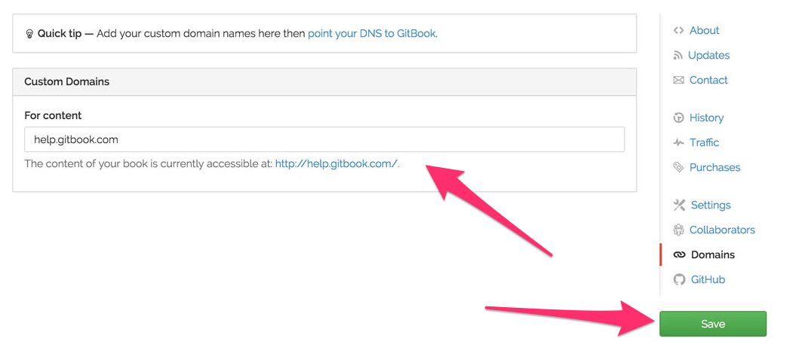

自定义域名
所有在 Gitbook.com 上的书的http地址为 http://{author}.gitbooks.io/{book}/，而书内容的地址是 http://{author}.gitbooks.io/{book}/content/。
但是你也可以使用你自定义的域名（GitBook的免费功能）。域名可以绑定到你的主页或者内容上（或两者都）。
很容易就可以添加一个自定义域名。
GitBool.com 设置
前往你书本的 设置 页面，点击 域名。然后输入你的域名并保存。

域名提供商设置
为了完成域名绑定，你需在你的域名提供商那边做一些设置：
登陆你的域名注册商的网站，找到允许你 添加/编辑 主机记录的页面，通常这个页面会在
编辑 DNS，主机记录或者域文件控制的设置里。设置一个值为
www的 CNAME 记录，URL域指向：www.gitbooks.io。为了 重定向 顶级域名（
yourdomain.com）到www.yourdomain.com上，你需要开启 “域名转发”。这个功能通常在转发，URL 转发或者URL 重定向中（大陆域名提供商已于2009年12月29日起禁用域名转发功能）。
DNS 解析的转播可能需要花上几个小时的时间。